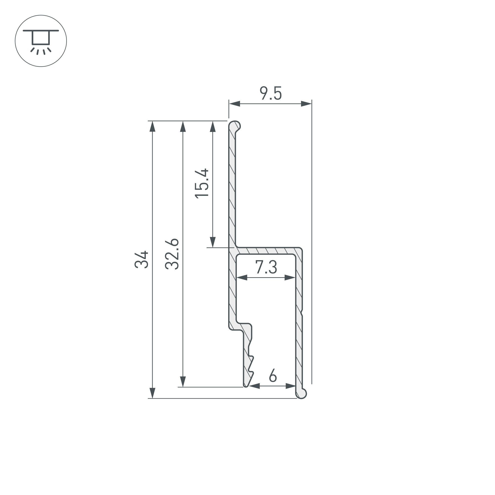
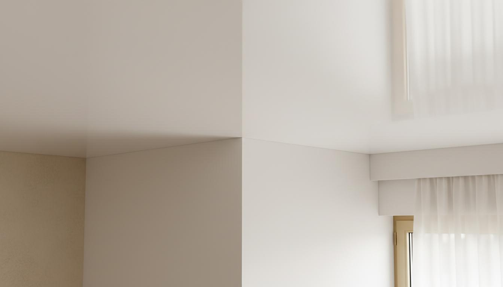
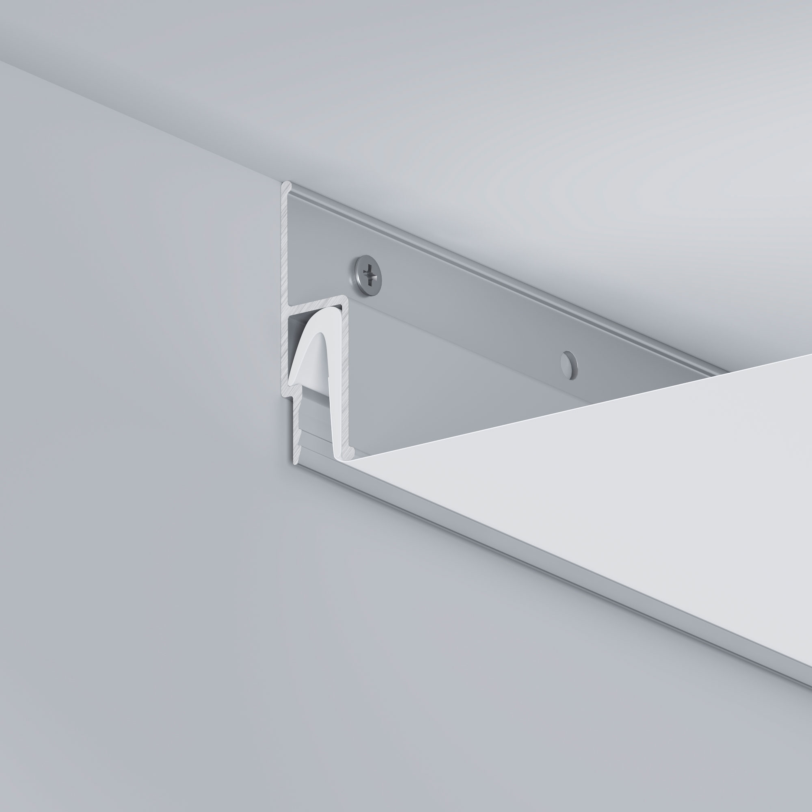
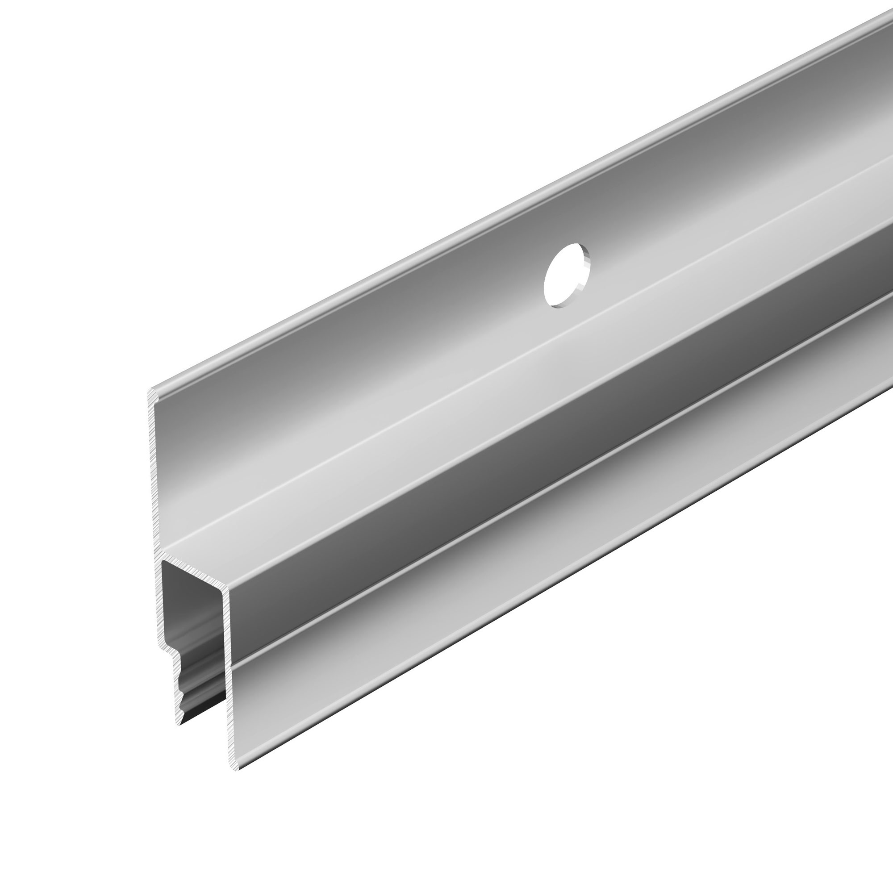

השוואה מהירה — גבס מול תקרה מתוחה
לפני שמתעמקים בפרטים — ההבדלים הקריטיים בין שתי האפשרויות




מה זה כל פתרון — בקצרה
הנמכת תקרה מגבס
הנמכת תקרה מגבס היא פתרון ותיק שעובד כך: בונים קונסטרוקציה ממסגרת מתכתית (פרופילים וחוטי תלייה), מחפים אותה בלוחות גבס בעובי 12.5 מ"מ, מחברים את חיבורי הלוחות עם שפכטל (2–3 שכבות), משייפים, מסיימים בצבע. הכל ביחד לוקח 3–7 ימי עבודה בחדר ממוצע בשל זמני ייבוש בין שכבות.
גבס נפוץ בשל גמישותו לצורות מורכבות: ניתן ליצור מפלסים, קשתות, כיפות, ועמודי גבס שקשה לשחזר עם יריעה אחת. הוא גם מוכר לקבלני גמר ונבחר לעיתים כברירת מחדל — גם כשהוא לא בהכרח הפתרון הטוב ביותר.
תקרה מתוחה
תקרה מתוחה היא יריעה מ-PVC גמיש שנמתחת ומוצמדת לפרופיל בקצות החדר. ההתקנה אורכת שעות — חדר ממוצע נגמר ב-4–8 שעות. לא אבק, לא שפכטל, ולא המתנה לייבוש. ניתן לחזור לגור מיד.
תקרה מתוחה מגיעה בגימורים שונים: מבריקה (השתקפות מלאה), מט (זהה במראה לגבס), סאטן (ברק עדין), הדפס מותאם אישית — כולל שמיים, עצים, ואמנות מותאמת. תאורה מובנית — פסי LED, ספוטים, מסילה מגנטית, פסים מרחפים — משולבת בהתקנה אחת ללא עבודות נוספות.
התקנה — זמן, לכלוך ושיבוש השגרה
בדירה מאוכלסת — זה ההבדל הגדול ביותר
זמן התקנה
גבס: חדר ממוצע — 3–7 ימי עבודה. כולל: הקמת קונסטרוקציה (יום 1), חיפוי גבס (יום 2), שפכטל ראשון + 24–48 שעות ייבוש, שפכטל שני + 24–48 שעות ייבוש, שיוף, סיבוב, צביעה ראשונה, צביעה שנייה. בין כל שלב — המתנה. בדירה שלמה: כמה שבועות.
תקרה מתוחה: חדר ממוצע — 4–8 שעות. דירה שלמה — יום עבודה. ללא ייבוש, ללא שלבים נפרדים, ללא ביקורים חוזרים. ראו את תהליך ההתקנה.
לכלוך ואבק
עבודת גבס מייצרת: אבק שפכטל (חודר לכל פינה), שבבי גבס בזמן חיתוך, אבק שיוף, ואידים מצבע. ריהוט חייב לצאת מהחדר או להיכסות לחלוטין. ניקיון אחרי גמר גבס לוקח ימים.
בתקרה מתוחה אין שפכטל, אין שיוף, ואין צבע. הצוות מביא פרופיל, יריעה, ומכשיר חימום. הניקיון שאחרי — ניגוב רגיל.
תאורה — ההבדל המשמעותי
הנמכת תקרה עם תאורה שקועה היא אחת הדרישות הנפוצות ביותר — ואחת הנקודות שבהן התקרה המתוחה מנצחת בצורה הברורה ביותר.
בגבס עם תאורה: כל אלמנט תאורה דורש תכנון נפרד. ספוטים — חיתוך גבס + הנחת תיל חשמל לכל ספוט. פסי LED שקועים — נדרש תחפיר מסביב לכל פס, תיבת גבס נפרדת. פסים מרחפים (תאורה היקפית נסתרת) — נדרשת בנייה של קרניז גבס מיוחד, שכבה נוספת של עבודה ועלות. כל תוספת = ביקור נוסף, עלות נוספת, עבודה נוספת.
בתקרה מתוחה עם תאורה: ספוטים שקועים, פסי LED, מסילה מגנטית שקועה, פסים מרחפים, ותקרה מוארת מלאה — כולם מתוכננים מראש ומותקנים בפעולה אחת. הפתחים מחוזקים בטבעת ייעודית לפני מתיחת היריעה. אין ביקורים נוספים, אין עלויות נוספות. ראו את כל פתרונות התאורה שלנו.
עמידות, תחזוקה ועלויות לאורך זמן
עמידות
גבס רגיש לשתי בעיות מרכזיות:
תנועת מבנה: כל בניין זז מעט עם השנים — שקיעת יסודות, שינויי טמפרטורה, רעידות. הזוזות הקטנות הללו יוצרות לאורך שנים סדקים בחיבורי לוחות הגבס ובפינות. ניתן לטפל בהם, אבל הם חוזרים.
לחות: גבס שנחשף לרטיבות — נזילה, קיטור, לחות גבוהה — מתנפח, עלול להתפורר, ועלול לפתח עובש. תיקון דורש החלפת לוחות, שפכטל, וצביעה.
תקרה מתוחה גמישה — לא נסדקת מתנועת מבנה. עמידה לחלוטין ברטיבות. ראו: עמידות תקרה מתוחה במים. במקרה נזילה מהקומה מעל — התקרה מתנפחת ומחזיקה את המים (עד 100 ליטר). לאחר תיקון הנזילה — ניקוז, אוורור, והתקרה חוזרת למצבה.
תחזוקה
גבס צבוע דורש צביעה מחדש כל 5–10 שנים. סדקים שמופיעים דורשים שפכטל + צביעה מקומית. זה לא יקר — אבל זה קורה, ומצטבר.
תקרה מתוחה לא דורשת צביעה מחדש. ניקוי — ניגוב עם מטלית לחה. אורך חיים — 15–20 שנה ויותר. תיקון במקרה נזק — ברוב המקרים אפשרי מבלי להחליף את כל התקרה.
תקרה ישנה, סדוקה, כתמי מים — מה עושים
תיקון גבס קיים: שפכטל, שיוף, צביעה. אם הבעיה חוזרת (נזילה פעילה, סדקים מבניים) — התיקון יחזור. זו עלות חוזרת.
תקרה מתוחה מעל התקרה הקיימת: ניתן להתקין תקרה מתוחה ישירות מעל התקרה הקיימת ללא הריסה. הפרופיל מוצמד לקירות, והיריעה נמתחת מעל — מסתירה לחלוטין את מצב התקרה הישנה. פתרון מהיר, נקי, וסופי — ללא שפכטל, ללא צביעה, ללא לכלוך. ראו: תיקון ניקוז תקרה.
עיצוב, גימורים וצבעים
גבס מגיע במט לבן. ניתן לצבוע בכל צבע בעלות נוספת. אי-אפשר לקבל מבריקה, סאטן, הדפס מותאם אישית, או תקרת שמיים.
תקרה מתוחה מגיעה ב7+ גימורים: מט, מבריקה, סאטן, הדפס / שמיים (כולל שמיים, תמונות, מראות מלאכותיות), אקוסטית, בריסול. צבע — כל צבע שניתן לייצר ב-PVC. ניתן לשלב כמה גימורים בחדר אחד עם פרופיל הפרדה. הדפס על תקרה — אפשרי רק בתקרה מתוחה.
מחיר — איך להשוות נכון
השוואת מחיר נכונה דורשת לכלול את כל הסעיפים, לא רק חומרים
אמדן כללי בלבד. המחיר הסופי תלוי בגובה, גימור, ואלמנטי תאורה. לחישוב מדויק — ראו את המחשבון שלנו.
מה מתאים לכל חדר — ומתי גבס עדיין הבחירה הנכונה
ההמלצה משתנה לפי סוג החלל, תנאי הלחות, ואופי השימוש
המלצה לפי חדר
הסלון מרוויח הכי הרבה מהאפשרויות של תקרה מתוחה: תקרה מבריקה שמכפילה גובה חלל, פסים מרחפים עם קו אור היקפי, תקרה מוארת מלאה בלי נברשת. גבס מאפשר צורות מורכבות — אבל ל-90% מהסלונות, תקרה מתוחה נותנת תוצאה מעולה בזמן קצר הרבה יותר.
תקרה מתוחה לסלון ←כאן התשובה ברורה: תקרה מתוחה. גבס בחדר רחצה הוא סיכון — לחות קבועה, קיטור, ולפעמים נזילות קטנות מהקומה מעל. גבס שנחשף לאלה מתפורר ועלול לפתח עובש. תקרה מתוחה עמידה ב-100% ללחות, לא מפתחת עובש, וניתנת לניקוי קל.
תקרה מתוחה לאמבטיה ←מטבח = שמן, קיטור, לחות. גבס במטבח מתלכלך ומסמיק, וצביעה מחדש היא עניין שגרתי. תקרה מתוחה ניתנת לניגוב בקלות, עמידה ללחות, ומשלבת ספוטים שקועים לתאורת עבודה מדויקת. גימור מט — הנפוץ ביותר במטבח — נראה זהה לגבס.
תקרה מתוחה למטבח ←חדר שינה מדגיש עיצוב ואווירה. תקרה מתוחה בגימור מט נותנת מראה נקי ואלגנטי. עם פסים מרחפים וקו אור היקפי — אפקט שגבס לא יכול לתת בקלות. ניתן לשלב מסילה מגנטית לקריאה מדויקת בכל נקודה.
תקרה מתוחה לחדר שינה ←עסקים דורשים פתרון מהיר, תחזוקה נמוכה, ותאורת עבודה מדויקת. תקרה מתוחה: יום עבודה אחד, ללא לכלוך, עם מסילה מגנטית לגמישות מקסימלית. גבס בעסק = שבועות סגירה ואבק שמגיע לכל פינה. פתרונות מיוחדים לעסקים.
תקרה מתוחה למשרד ←מקווה הוא הדוגמה הקיצונית — מים ולחות קבועים. גבס אינו מתאים. תקרה מתוחה, לעיתים עם הדפס שמיים, היא הפתרון הסטנדרטי למקוואות בישראל.
תקרה מתוחה למקווה ←מתי גבס מתאים יותר
אנחנו מוכרים תקרות מתוחות — אבל נשתדל להיות ישרים. יש מצבים שבהם גבס עדיין מתאים:
- צורות תלת-מימדיות מורכבות מאוד — קשתות גדולות, כיפות, עמודים, שלוש-מימד מורכב שיריעה שטוחה לא יכולה לשחזר.
- מפלסים רבים מאוד בחדר אחד — כשרוצים 4–5 גבהים שונים עם מעברים מורכבים.
- פרויקטים ייחודיים מאוד — אדריכלות שדורשת עיצוב בנייה מסורתי ספציפי.
חשוב: SkyView מציעה גם גימור גבס בתקרה מתוחה — מראה זהה לגבס, אבל עם כל יתרונות התקרה המתוחה: יום התקנה, ללא לכלוך, עמידה ברטיבות.
תקרה מתוחה מול גבס — שאלות נפוצות
לפני ואחרי — פרויקטים אמיתיים
גררו את הפס כדי לראות את ההבדל
רוצים הצעת מחיר מדויקת?
כולל תקרה + תוספות — אחרי שיחה קצרה
חוזרים תוך שעה · ייעוץ חינם · ללא התחייבות